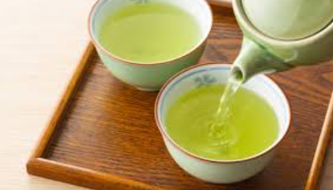

Green Tea

Green tea, a source of antioxidants and caffeine, has several possible benefits. Research has found that the health benefits of green tea may include alleviating anxiety and stress, enhancing memory, and reducing high blood pressure and cholesterol.123
There are several types of green tea, including beverages, dietary supplements, and even topical ointments.
Benefits of Green Tea
- Alleviates Anxiety and Stress
- Tea contains an amino acid called L-theanine, which alleviates anxiety and stress, helping you relax.5 Green tea has one of the highest concentrations of L-theanine compared to black, oolong, and white tea.1
Research has found that supplementing 200–400 milligrams of L-theanine daily helps reduce anxiety and stress.6 A study published in 2019 found that people who took 200 milligrams a day of L-theanine for four weeks had greater improvements in anxiety, depression, and sleep than those who took a placebo.
Of note: The amount of L-theanine used in the study is much more than that in a cup of green tea, which ranges from eight to 30 milligrams.7 Talk to a healthcare provider or pharmacist before starting supplements containing this amount of L-theanine.
- Helps Protect Against Cognitive Decline
- Some evidence suggests that drinking green tea helps protect against certain neurodegenerative diseases, like Alzheimer's and Parkinson's. Green tea has a high concentration of antioxidants, which may protect against cell damage that raises the risk of chronic illnesses.89
Cognitive decline is one of the first noticeable symptoms of Alzheimer's disease and related forms of dementia. Cognitive decline involves frequent, worsening instances of confusion and memory loss.10
Centers for Disease Control and Prevention. Subjective cognitive decline — a public health issue.
- Helps Support Bone Health
- Green tea may lower your risk of osteoporosis, a bone disease that increases the risk of hip, spine, and wrist fractures. Postmenopausal people have the highest risk of osteoporosis.11
MedlinePlus. Osteoporosis.
Some evidence suggests that the high concentration of antioxidants in green tea may enhance bone formation and protection against bone mass loss.
- Improves Longevity
- Drinking green tea may help support living a healthy, long life. Green tea is a source of polyphenols, or plant compounds that act as antioxidants.13
Research has found that polyphenols have anti-aging effects, such as:
-
- Decreasing inflammation
- Minimizing oxidative stress, or cell damage caused by harmful substances that may increase the risk of disease
- Reducing signs of aging
- Lowers Cholesterol
- A review published in 2020 found that consuming green tea helps lower LDL ("bad") and total cholesterol.3 Nearly two in five adults in the United States have high cholesterol levels, which raises the risk of heart attack and stroke.

For More Information, Click the above Green Tea Cup